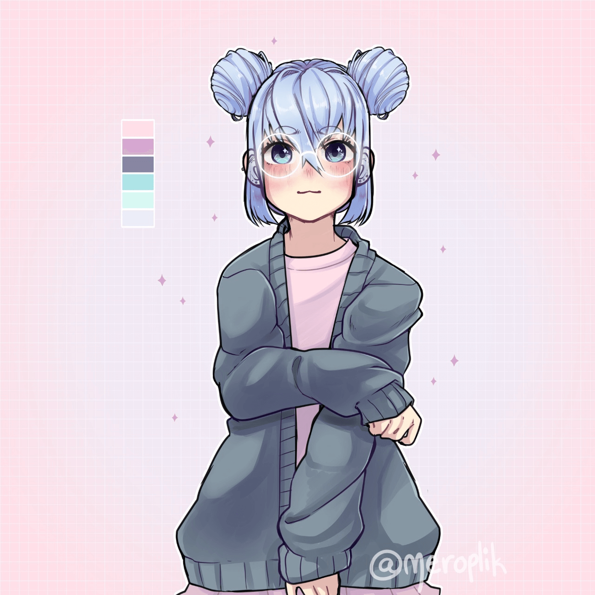
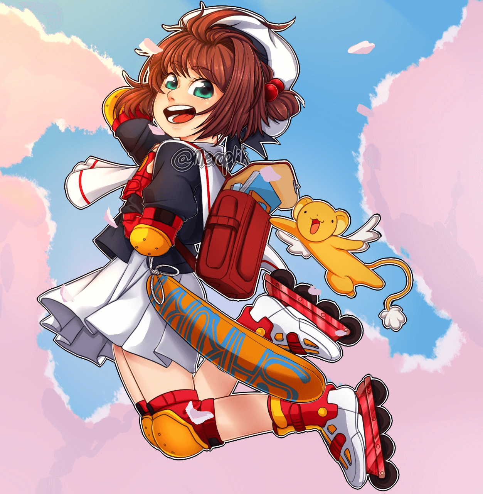
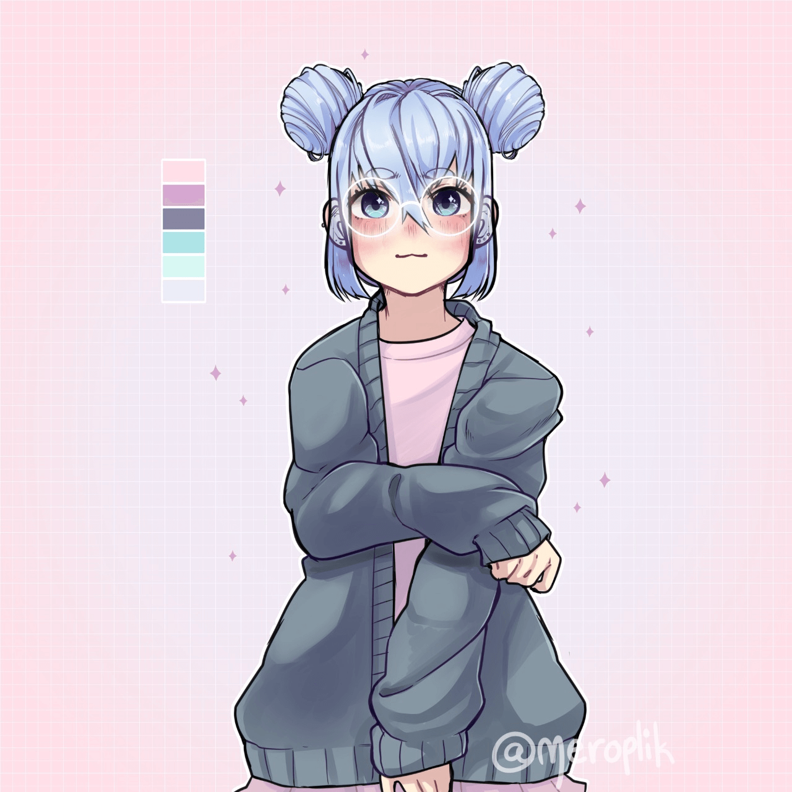
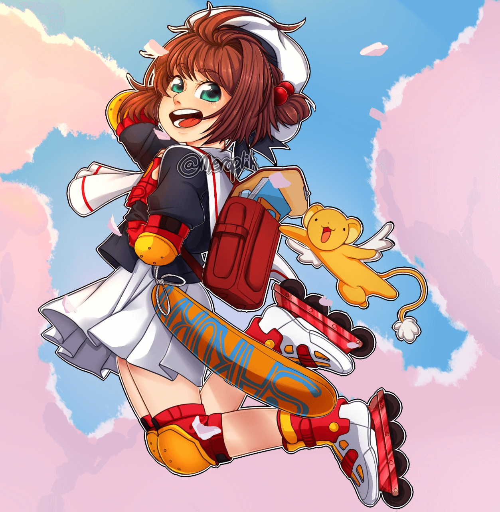

About Me

I'm a 20 y/o student from Argentina. I'm studying DCV in the Facultad de Bellas Arte of the UNLP. My hobbies include watching anime, playing videogames like Genshin Impact, DOTA 2, Northgard and most recently Proyect Zomboid, I also like to make desserts and cooking with my bf. I love animals, dogs and cats are my favorites but capybaras and parrots are cool too, I'd like to know other species like Ailurus fulgens too. I love to go out with my friends, going to a bar or a coffee shop (I don't like starbucks btw, too expensive). My favorite beer is the Andes Amber, but I also like stout beers and lagers, my preference in wine is a sweet white sparkling wine (Santa Julia is a good option). I like to read manga too, one of my favorites is Oyasumi Pun Pun, but others like Berserk or OPM are good too. I also go to the gym, cannot say I'm too good at it but I'm doing well, my bf always give me a hand with all the things about a routine, diet and things like that
How did I start?
Since I was a child, I had a deep interest in arts (drawing in particular) so I started doing draw at the age of 6-7. Later, when I was 13 I'd got accepted in the music institute of La Plata Gilardo Gilardi, where I played the piano. Around the same time I started my first IG account called "Meroplik", it didnt had too much impact at the start but I was happy of sharing my art to the world. It wasn't untill the quarantine when things got serious with the account. I abandoned the University of Economic Science and started selling commissions and doing challenge in my account, my account grew and eventually I got to 60k followers, then I got shadowbanned by Instagram and got to restart in my new account.
Here are some old drawings
 


